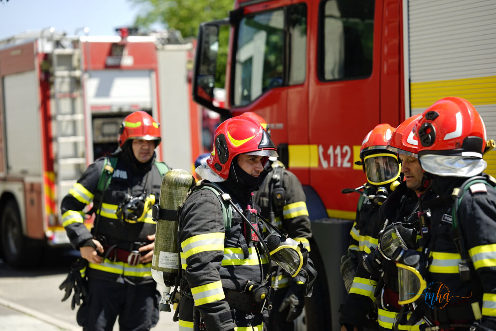
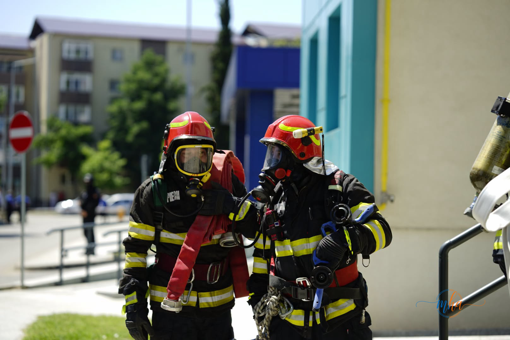
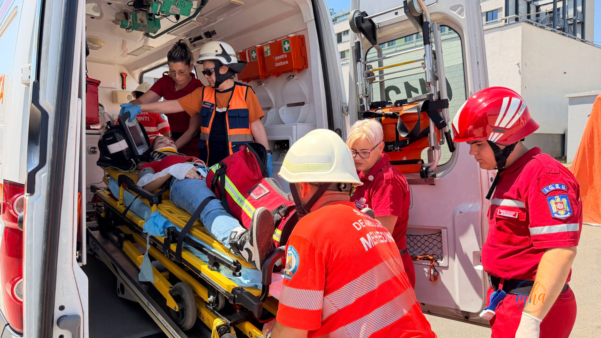
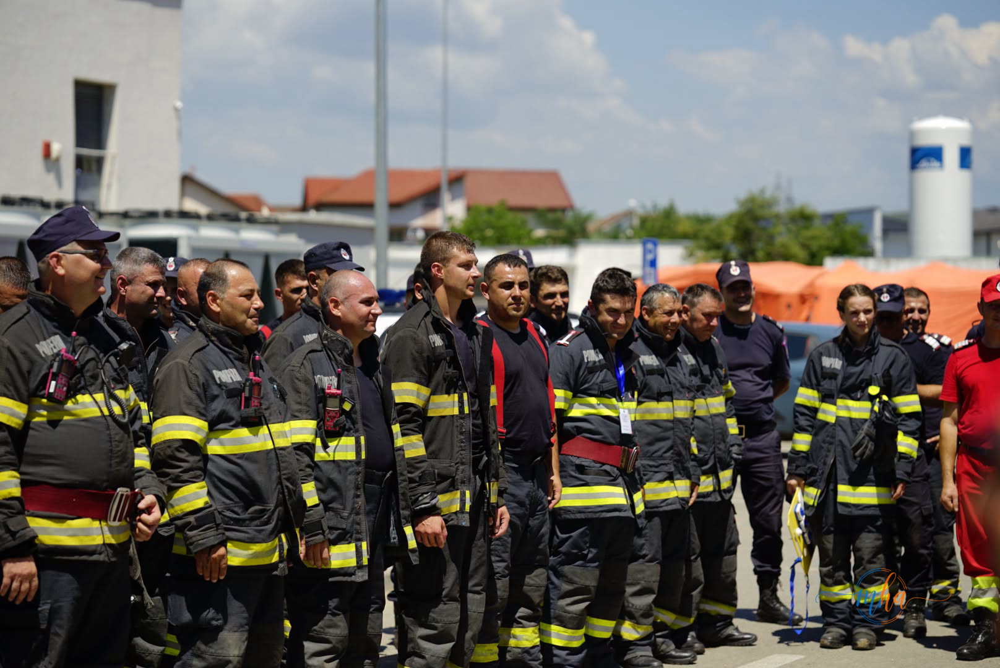

Inspectoratul pentru Situații de Urgență „Decebal" Mehedinți a desfășurat astăzi, 25 iunie 2026, un exercițiu complex cu forțe și mijloace în teren, la Spitalul Județean de Urgență Drobeta Turnu Severin. Scenariul simulat a presupus izbucnirea unui incendiu în Camera de gardă a spitalului, cu mai multe victime surprinse în interior.
🚒 Date operative — Exercițiu ISU Mehedinți
| Data | 25 Iunie 2026 |
| Locație | Spitalul Județean de Urgență Drobeta Turnu Severin |
| Scenariu simulat | Incendiu la Camera de gardă, victime în interior |
| Efective | Peste 50 de pompieri |
| Mijloace | 12 autospeciale (stingere, înălțimi, SMURD etc.) |
Peste 50 de pompieri și 12 autospeciale, mobilizate pentru exercițiu
Pentru gestionarea situației de urgență simulate, la fața locului s-au deplasat peste 50 de pompieri, cu următoarele mijloace de intervenție:
- 4 autospeciale de stingere
- 1 autospecială de intervenție și salvare de la înălțimi
- 1 autospecială de calamități și dezastre
- 1 autospecială de cercetare chimică
- 4 autospeciale de primă intervenție și comandă
- 1 ambulanță SMURD


Intervenție interinstituțională — spital, ambulanță, jandarmi, poliție și mediu
Exercițiul a testat capacitatea de răspuns interinstituțional, mobilizând, alături de pompierii mehedințeni, și echipaje din cadrul mai multor structuri:
- Spitalul Județean de Urgență Drobeta Turnu Severin
- Serviciul Județean de Ambulanță Mehedinți
- UPU Drobeta Turnu Severin (Unitatea de Primiri Urgențe)
- Inspectoratul de Jandarmi Județean Mehedinți
- Poliția
- Direcția de Sănătate Publică Mehedinți
- Direcția Județeană de Mediu
- Garda Națională de Mediu
- Voluntari ai Filialei de Cruce Roșie Mehedinți

Echipajul SMURD și personalul medical au exersat procedurile de triaj și evacuare a victimelor | Foto: ISU Mehedinți
De ce sunt importante aceste exerciții?
Exercițiile periodice cu forțe și mijloace în teren sunt obligatorii pentru unitățile sanitare și reprezintă un instrument esențial pentru pregătirea echipajelor de intervenție în vederea gestionării eficiente a situațiilor reale de urgență.
Antrenamentele de acest tip permit identificarea punctelor slabe din planurile de evacuare și intervenție, reducerea timpilor de răspuns și îmbunătățirea coordonării dintre structurile implicate. Viețile pacienților și ale personalului medical depind, în situații reale, de viteza și profesionalismul cu care echipajele acționează.

Mai multe detalii despre exercițiul desfășurat astăzi pot fi găsite pe site-ul oficial ISU Mehedinți: isumh.igsu.ro.